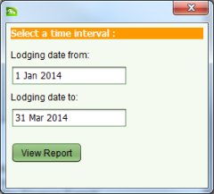

The Lodgement Report lists information on the number of jobs and tasks processed during a given time period. It can be accessed using the Reports > Lodgement Report menu option in the SOLA State Land Desktop main menu. Enter the appropriate time interval in the dialog displayed and click View Report to generate the Lodgement Report.

Lodgments Report Interval